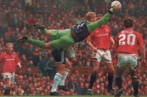

Chương 30

au cú ăn ba lịch sử, Manchester United "chuyển nhà" từ The Cliff tới Carrington. Không những tối tân, hiện đại, trung tâm huấn luyện Carrington còn cực kỳ kín cổng cao tường. Nếu như The Cliff trống trải, ai vào cũng được, thì Carrington được ví như một pháo đài, với ba lớp hàng rào điện tử, người ngoài nếu không giấy phép, không ai có thể xâm nhập.
Về lực lượng đội bóng, Sir Alex dự tính không mua nhiều cầu thủ, bởi chẳng có lý do gì để thay đổi một đội hình vừa làm nên kỳ tích. Ông chỉ ký hợp đồng với Mark Bosnich theo dạng chuyển nhượng tự do. Thời kỳ khoác áo Aston Villa, Bosnich được coi là một trong những “người giữ đền” xuất sắc nhất giải ngoại hạng. Trước đó, anh từng là học trò của Sir trong những năm 1989-1991. Ngỡ như không ai xứng đáng thay thế Schmeichel hơn thủ thành người Úc.
Nhưng không ai biết, vào gian đoạn cuối ở Villa Park, Bosnich đã bắt đầu “đổ đốn”. Chỉ khi Bosnich đến Old Trafford, BHL United mới nhận ra anh có vấn đề lớn về thể lực. Tệ hơn nữa, ngoài Bosnich, trong giai đoạn chuẩn bị cho mùa giải mới, cả Ronny Johnsen, Jesper Blomqvist, và Wes Brown đều dính chấn thương rất nặng[1], buộc Sir Alex phải quay lại thị trường chuyển nhượng, “quơ” vội thủ môn Massimo Taibi từ Venezia, và trung vệ Mikael Silvestre từ Inter Milan.
Silvestre là một cầu thủ trung bình khá, không có gì nổi trội, nhưng dù sao cũng tương đối hữu dụng, trong khi Taibi là bản hợp đồng thất bại hoàn toàn, bị fan hâm mộ đặt cho biệt danh “người Venice mù”. Ở trận thứ ba khoác áo United, anh làm trò cười cho thiên hạ khi để cú sút nhẹ hều của Matthew Le Tissier (Southampton) lọt qua chân vào lưới. Không vì một lỗi lầm mà “trảm” thủ môn, Sir Alex vẫn tín nhiệm Taibi cho trận tiếp theo gặp Chelsea. Anh đáp trả niềm tin của thầy bằng cách cho Chelsea…sút tung lưới năm trái. Thế là xong! Trận đấu đó cũng đánh dấu chấm hết cho sự nghiệp Taibi tại Old Trafford. Trong phần còn lại của mùa giải, Sir Alex sử dụng xen kẽ Mark Bosnich và thủ môn 37 tuổi người Hà Lan Raimond van der Gouw.
Tuy thế, hàng công United quá “khủng”, đủ sức bù đắp cho điểm yếu thủ môn ở giải quốc nội. Quỷ Đỏ đã nhiều lần VĐQG, song chưa bao giờ vô địch dễ như mùa 1999-2000: Còn đến bốn vòng đã chính thức đăng quang. Họ lập kỷ lục về điểm (91 điểm) và số bàn ghi được (97 bàn) trong một mùa giải[2]. Khoảng cách 18 điểm giữa United và á quân Arsenal cũng là lớn nhất trong lịch sử. Chênh lệch về hiệu số thắng bại còn kinh khiếp hơn: Hiệu số của nhà vô địch là +52, của Arsenal là +30, của Leeds (hạng ba) chỉ là +15. Yorke và Cole tiếp tục tỏa sáng, với 24 và 22 bàn trên các mặt trận, Solskjaer đứng kế sau với 15. Đội trưởng Roy Keane cũng có một mùa bùng nổ, khi ghi được đến 12 bàn (trong đó có hai bàn rất tinh tế trong trận thắng Arsenal 2-1).
Do lịch thi đấu quá dày, United không tung ra đội hình mạnh nhất trong trận tranh Siêu Cúp Châu Âu với Lazio[3], đành chấp nhận thất bại 0-1. Sir Alex cũng chẳng buồn: Ông đã có trong tay hai Siêu Cúp. Quan trọng hơn Siêu Cúp là Cúp Liên Lục Địa. Cúp này chẳng những Sir chưa có, United chưa có, mà khắp Đại Anh Quốc, cũng chưa CLB nào có. Đối đầu cùng Quỷ Đỏ tại Tokyo là CLB Brazil Palmeiras. Bận thi đấu ở Cúp C1, United chỉ có thể đến Nhật bốn ngày trước trận đấu, trong khi Palmeiras đến sớm trước tận 10 ngày để làm quen khí hậu.
Theo dõi băng ghi hình về Palmeiras, Sir Alex nhận thấy nhà vô địch Nam Mỹ thường tập trung tấn công trung lộ. Không ngờ khi trận đấu bắt đầu, họ lại đổi bài, toàn đánh biên. Bị bất ngờ, United đâm ra lúng túng. Beckham và Giggs không thể dâng cao, phải lùi về sâu hỗ trợ cho Gary Neville và Irwin. Không may cho Palmeiras, họ chiếm ưu thế trong hiệp một, nhưng không sao ghi được bàn thắng. Thủ môn Marcos còn “tặng quà” cho đối thủ, khi lao ra bắt hụt đường tạt bóng của Giggs, tạo cơ hội cho Keane dứt điểm vào lưới trống. Sang hiệp hai, United kịp thời điều chỉnh chiến thuật, bảo vệ được tỷ số 1-0. Ryan Giggs được bầu là cầu thủ xuất sắc nhất trận, với phần thưởng là chiếc xe hơi Toyota.
Cũng trong mùa 1999-2000, United phải tham dự giải đấu mới do FIFA sáng lập: Cúp Vô Địch Thế Giới Các CLB, quy tụ những nhà vô địch từ khắp năm châu. Sir Alex không mặn mà gì với giải mới này. Ông tính từ chối không đi, vì nếu đi sẽ phải sang tận Brazil suốt hai tuần, bỏ lỡ vòng đấu thứ tư của Cúp FA. Éo le một điều, lúc bấy giờ Anh đang chạy đua giành quyền tổ chức World Cup 2006 với Đức; nếu United rút lui, á quân Bayern Munich sẽ thế chỗ, cũng có nghĩa là Anh mất điểm trước Đức trong mắt FIFA. Vì vậy, cả LĐBĐ lẫn chính phủ Anh đều gây áp lực lên United, buộc họ dự giải. Trong thế “trên đe dưới búa”, Quỷ Đỏ đành bỏ Cúp FA, sang Brazil.
Tin United bỏ Cúp FA ngay lập tức gây chấn động. Thầy trò Sir Alex bị báo chí chỉ trích kịch liệt vì tội dám coi thường cúp bóng đá lâu đời nhất hành tinh. Thật là oan hơn “oan Thị Kính”, bởi bản thân họ có muốn thế đâu! Dự giải trong tâm thế bị ép buộc, United chẳng thể hiện được gì nhiều. Đội thua Vasco da Gama của “vua lùn” Romario, hòa Necaxa (Mexico), chỉ thắng nổi South Melbourne (Úc), phải xách valy về nước ngay sau vòng đấu bảng. Nước Anh cũng chẳng được lợi lộc gì; quyền tổ chức World Cup vẫn được trao về Đức.
Mùa 2000-2001 đánh dấu một thay đổi lớn trên thượng tầng United: Peter Kenyon lên thay Martin Edwards làm giám đốc điều hành. Trên sân cỏ, Sir Alex thực hiện hai bản hợp đồng lớn: Mua thủ môn Fabien Barthez, Đôi Găng Vàng World Cup 1998, và tiền đạo Ruud Van Nistelrooy, người vừa hai năm liên tiếp giành cú đúp danh hiệu: Cầu Thủ Xuất Sắc Nhất kiêm Vua Phá Lưới Hà Lan[4]. Phi vụ thứ nhất thành công: Barthez nhanh chóng chiếm được vị trí bắt chính tại Old Trafford, nhưng vụ thứ hai đổ vỡ vào phút cuối cùng, do Nistelrooy bất ngờ bị chấn thương nặng, phải nghỉ thi đấu một năm. Một HLV khác có lẽ đã bỏ của chạy lấy người, Sir Alex thì không thế. Ông gọi điện cho Nistelrooy, sau đó đích thân bay sang Hà Lan, đến tận nhà anh để an ủi. “Cứ an tâm chữa trị”, Sir nói “Chúng tôi sẽ chờ cậu tới cùng”. “Tôi kinh ngạc khi thấy thầy đến nhà mình”, Nistelrooy cảm động, “Suốt thời gian chấn thương, tôi luôn cảm thấy ấm lòng vì được thầy thường xuyên thăm hỏi”.
Cũng như mùa trước, đường đến chức vô địch của United cực kỳ thênh thang. Họ lên ngôi đầu bảng từ tháng 10, và từ đó đến cuối giải, không bao giờ rớt xuống thứ hai. Đội giành những chiến thắng hoành tráng như 6-0 trước Bradford, 5-0 trước Southampton, và vô cùng đặc biệt, 6-1 trước đối thủ cạnh tranh trực tiếp Arsenal (Dwight Yorke lập hattrick). Sau lúc đã chắc chắn đăng quang, United ra quân với tinh thần “cưỡi ngựa xem hoa”, dẫn đến việc thua liền ba trận trong ba vòng đấu cuối cùng. Dù vậy, Quỷ Đỏ vẫn bỏ xa Arsenal 10 điểm. Họ lập thành tích ghi bàn nhiều nhất và để lọt lưới ít nhất giải ngoại hạng, với hiệu số +48, một trời một vực khi so cùng +25 của Arsenal. Sir Alex Ferguson bước vào bảng vàng lịch sử với tư cách HLV đầu tiên ba lần liên tiếp VĐQG Anh.[5]
Phong độ cặp Cole-Yorke trong năm thứ ba bên nhau sa sút hẳn đi. Hattrick của Yorke vào lưới Arsenal chỉ là giây phút tỏa sáng hiếm hoi. Tổng kết cuối mùa, Cole ghi được 13 bàn, Yorke 12, chỉ ngang với tiền vệ Paul Scholes. May là United có đến bốn tiền đạo xuất sắc. Khi Cole-Yorke lu mờ, đã có Sheringham-Solskjaer. Ở tuổi 35, Sheringham thể hiện phong độ cao nhất trong sự nghiệp. Thể lực đã yếu, rất ít di chuyển, nhưng mỗi khi di chuyển, với nhạy cảm vị trí tuyệt vời, anh luôn tìm đến đúng điểm nóng, lẻn qua sự săn sóc của hậu vệ đối phương để chớp thời cơ ghi bàn. Lập công 21 lần, Sheringham là vua phá lưới của United, nhận phần thưởngCầu Thủ Xuất Sắc Nhất Nước Anhcủa cả PFA và FWA. Dưới tuyến tiền vệ, David Beckham một lần nữa về nhì trong danh sách Cầu Thủ Xuất Sắc Nhất Thế Giới của FIFA,đồng thời được đài BBC bình chọn là VĐV Thể Thao Xuất Sắc Nhất Đại Anh Quốc.
Dù vậy, niềm vui của United không trọn vẹn: Họ hai lần liên tiếp bị đánh bại ở tứ kết Cúp C1. Mùa 1999-2000, Quỷ Đỏ chiếm lợi thế với trận hòa 0-0 ngay trên sân Real Madrid, song lại tự mình hại mình ở Nhà Hát Những Giấc Mơ. Sau bàn phản lưới của Roy Keane, Raul hai lần lên tiếng, đưa Real dẫn đậm 3-0. Chủ nhà cố hết sức cũng chỉ rút ngắn tỷ số xuống được 2-3, do công Beckham và Scholes. Mùa 2000-2001, Bayern Munich báo thù thành công trận thua cay đắng tại Camp Nou, thắng United cả hai lượt trận với tổng tỷ số 3-1. Vượt qua United, cả Real lẫn Bayern sau đó đều lên ngôi vô địch.
Thật sự, với một thế hệ vàng vẫn đang trong độ tuổi chín muồi, Manchester United những năm 2000-2001 không yếu hơn năm 1999. Tại giải ngoại hạng Anh, CLB hoàn toàn vô đối, luôn vô địch trước đến bốn năm vòng, chứ không phải đợi đến vòng cuối cùng như mùa 1998-1999. Với sức mạnh đó, họ có khả năng giành thêm ít nhất một Cúp C1. Vấn đề của Quỷ Đỏ là vị trí thủ thành. Đội hình đoạt cú ăn ba chỉ thiếu đi Peter Schmeichel, song chính cái thiếu ấy trở thành tử huyệt. VĐQG đấu theo kiểu đường dài nên không sao, còn các giải cúp đá theo kiểu loại trực tiếp, nhiều khi chỉ cần một phút sơ sẩy hay một lỗi lầm cũng đủ khiến đội bóng phải rời cuộc chơi, nên vai trò của thủ môn hết sức quan trọng. Bosnich hay Van der Gouw đều không thể sánh với người khổng lồ Đan Mạch. Barthez phản xạ cực tốt, nhưng chuyên diễn trò hề trên sân cỏ. Màn diễn hài hước nhất của Barthez trong mùa 2000-2001 diễn ra ở trận gặp West Ham tại vòng bốn Cúp FA. Khi Di Canio của West Ham dẫn bóng vào vùng cấm địa, chàng trọc người Pháp không lao ra truy cản, cũng không thủ thế, mà đứng như trời trồng, tay giơ lên cao, báo hiệu với trọng tài đối phương đã việt vị. Thậm chí Di Canio đã vào đến sát vòng 5m50, co chân chuẩn bị sút, chàng ta vẫn đứng ngây như phỗng. Kết quả: West Ham thắng 1-0, đá văng United.
Rời Old Trafford, Peter Schmeichel vẫn thể hiện phong độ đỉnh cao tại Sporting Lisbon, Aston Villa và Manchester City. Nếu Schmeichel chịu ở lại thêm vài năm, có thể mọi chuyện đã rất khác. Real Madrid chưa chắc lập được kỷ lục 9 lần vô địch châu Âu!

Một pha cứu bóng của Peter Schmeichel (ảnh: Confessionsofamanunitedfan.com)
[1] Chấn thương của Johnsen và Blomqvist dai dẳng mãi không khỏi, ảnh hưởng đến phong độ, buộc họ phải lần lượt rời Old Trafford để đến những CLB nhỏ hơn.
[2] Mùa 2003-2004, khi Arsenal giành chức vô địch với thành tích bất bại, số bàn thắng của họ chỉ là 73.
[3] Trận tranh Siêu Cúp diễn ra ngày 27-8-1999, giữa hai trận gặp Coventry (25-8) và Newcastle (30-8) tại giải ngoại hạng. Sau khi Salas mở tỷ số cho Lazio, Sir Alex không tăng cường lực lượng, mà lại tung những cầu thủ như John Curtis, Jonathan Greening, và Jordi Cruyff vào sân để họ có dịp cọ sát.
[4] Người tiến cử Van Nistelrooy cho Sir Alex chính là con trai ông, Darren Ferguson.
[5] HLV huyền thoại Herbert Chapman hai lần vô địch cùng Huddersfield (1924, 1925), nhưng chuyển sang Arsenal trước khi Huddersfield vô địch năm 1926. Tại Arsenal, Chapman một lần nữa vô địch hai lần liên tiếp (1933, 1934), nhưng qua đời trước chức vô địch năm 1935. Thập niên 1980, Liverpool cũng giữ cúp suốt ba mùa, song dưới sự dẫn dắt của hai đời HLV: Bob Paisley và Joe Fagan.